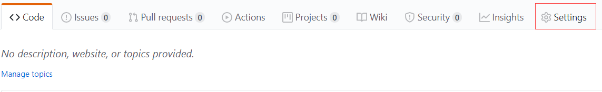
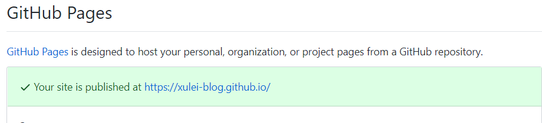
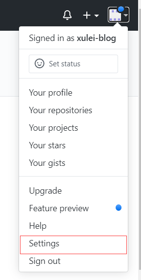
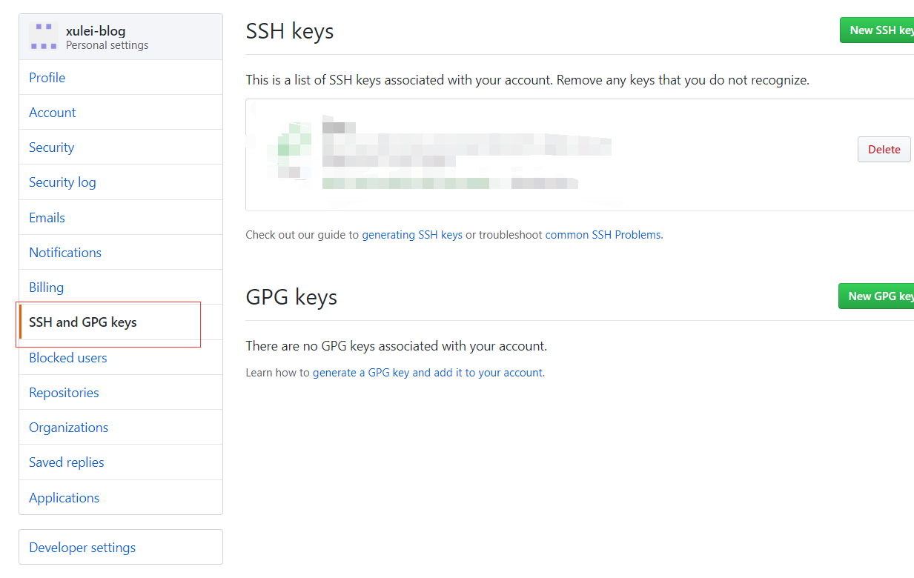
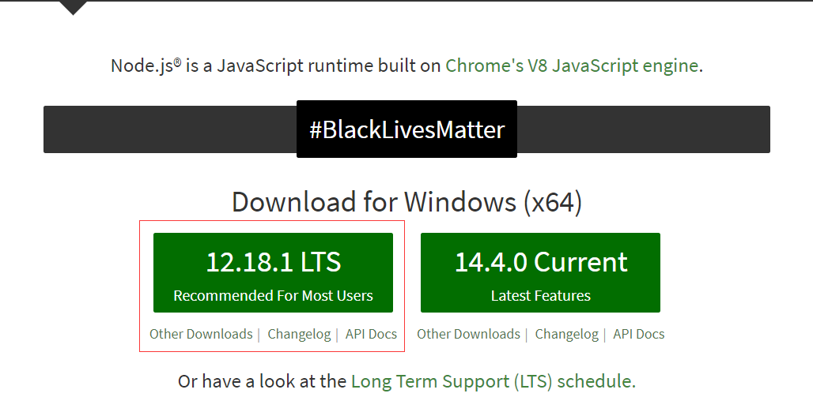

hexo博客搭建与在GitHub发布
本文介绍如何依赖于GitHub网站创建hexo博客
hexo搭建个人博客
1、安装软件
1 | git |
检验是否安装成功
git
1 | $ git --version |
node
1 | $ node -v |
2、Github仓库的创建与配置
创建Github仓库
打开Github官网，点击右上角加号，点击”New Repository”，要注意仓库的命名问题，要按照 账户名.github.io 的方式创建，否则后面的操作会出现问题。
创建好仓库后，图片右侧”Settings”，向下拉找到Github Pages，会看到 https://账户名.github.io/ 以后可以通过此网站访问博客。


配置git仓库
如果你第一次使用git，就需要配置git的环境
1 | $ git config --global user.name "账户名" |
接下来输入
1 | $ cd ~/.ssh |
会提示你找不到该文件或路径
接下来使用ssh-keygen生成私钥和公钥
1 | $ ssh-keygen -t rsa -C "邮箱" |
查看生成的公钥和私钥
1 | $ cd ~/.ssh |
将公钥添加到GitHub中
在GitHub中点击头像下拉框，点击”Settings”

点击”New SSH key”添加新的公钥

添加完成使用”ssh -T git@github.com“命令，测试添加ssh是否成功
1 | $ ssh -T git@github.com |
3、node安装
在官网下载长期支持版本，之后一路狂点next就行

4、Hexo的安装与配置
最好使用git bash命令行进行操作
安装hexokinase
1 | $ npm install hexo -g |
等提示完成后，可以使用hexo -v命令进行测试，还可以检查其他组件是否安装成功
1 | $ hexo -v |
初始化hexo文件夹
1 | $ hexo init |
接下来就慢慢等吧，有快有慢，失败就重新开始
当看到”Start blogging with Hexo！”时，说明初始化已经完成
接下来就是输入npm install
1 | $ npm install |
hexo的环境安装和初始化工作完成
hexo的操作
1 | $ hexo g 生成静态文件 |
服务器启动完成后，在浏览器中输入 https://localhost:4000 就可以登陆博客页面，但这个是本地的
将git库与hexo连接起来
在hexo文件夹中找到_config.yml文件，在文件末尾找到deploy
1 | deploy: |
注意：这些冒号后面必须有一个空格
修改完成后，需要安装hexo-deployer-git插件，在blog目录下运行命令
1 | $ npm install hexo-deployer-git --save |
以后凡是修改_config.yml文件后，都需要运行hexo d命令部署一下，否则修改内容将不会生效。
5、hexo常用命令
创建一个博客
1 | $ hexo new "title" |
创建完成需要生成静态文件
1 | $ hexo g 生成静态文件 |
当确定博客已经创建完成，需要运行hexo d命令，将博客提交到git库
当遇到异常情况，可以使用hexo clean命令清除
至此，一个博客创作完成，可以在外网使用 https://账户名.github.io 的路径访问博客
6、hexo主题更改
如果不喜欢原来的主题，可以将新的主题复制到themes目录中
推荐使用yilia主题
1 | # git clone https://github.com/litten/hexo-theme-yilia.git themes/yilia |
该下载时间可能会很长，慢慢等待
再修改_config.yml文件中的themes
1 | themes: yilia |
网上有许多该主题配置教程，这里不再赘述
后记
第一次写博客，还有许多不足和缺陷，仅供参考，欢迎讨论